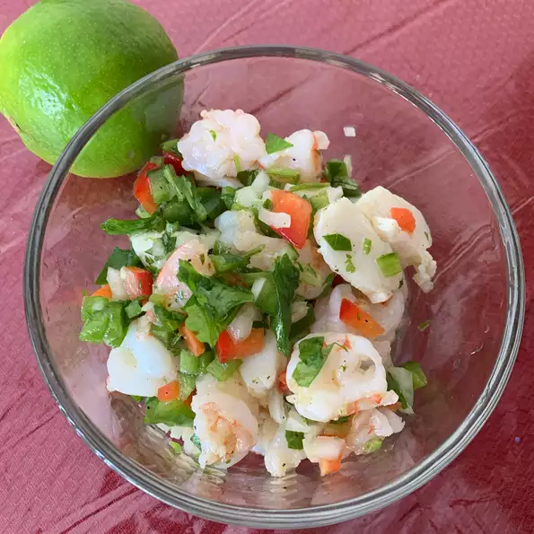

City Ceviche

Description
A wonderful appetizer to enjoy with friends when San Francisco's Indian summer warms the city. The true way to 'cook' the fish is to marinate it in citrus juice overnight, but I find that the poaching process is faster and an easy way to judge if it is indeed cooked. I often buy precooked shrimp (but NOT frozen!) and just poach the scallops. Best when served with cold beer (we prefer Pacifico®) and fresh limes. Using quality and sturdy tortilla chips is essential. Please note that the serving size is meant for appetizer portions.
Ingredients
- ½ pound sea scallops
- ½ pound shrimp, peeled and deveined
- ½ cup fresh lime juice
- 2 tablespoons fresh orange juice
- 1 tablespoon grated orange zest
- ½ cup halved, thinly sliced red onion
- 1 finely chopped red bell pepper
- 1 finely chopped yellow bell pepper
- 1 cup diced seeded tomato
- 1 small serrano chile pepper, seeded and minced
- ½ cup coarsely chopped fresh cilantro
- kosher salt to taste
- ⅛ teaspoon ground cumin
- ⅛ teaspoon cayenne pepper (Optional)
- 1 avocado, diced
- 1 tablespoon olive oil
Steps
- Remove the tough side muscles from scallops, if necessary; slice scallops in half horizontally.
- Fill a 1-quart saucepan 3/4 full with salted water and bring it to a boil. Add scallops and reduce heat to a bare simmer. Poach scallops until just cooked through, about 1 minute. Use a slotted spoon to transfer the scallops to a bowl of ice water to stop the cooking process.
- Return the water to a boil and poach shrimp in the same manner, transferring them to a bowl of ice water after they become opaque inside and turn pink, 2 to 3 minutes.
- Drain the scallops and shrimp well and pat dry; place them in a glass or ceramic bowl and pour in lime juice and orange juice. Cover and refrigerate for 30 minutes.
- Pour off most of the juice from the seafood (just leave it moist) and mix in orange zest, red onion, red and yellow bell peppers, tomato, chile pepper, cilantro, salt, cumin, and cayenne pepper. Refrigerate an additional 30 minutes. Just before serving, gently mix in avocado and drizzle the ceviche with olive oil. Serve in martini glasses or stemmed margarita glasses.
Source